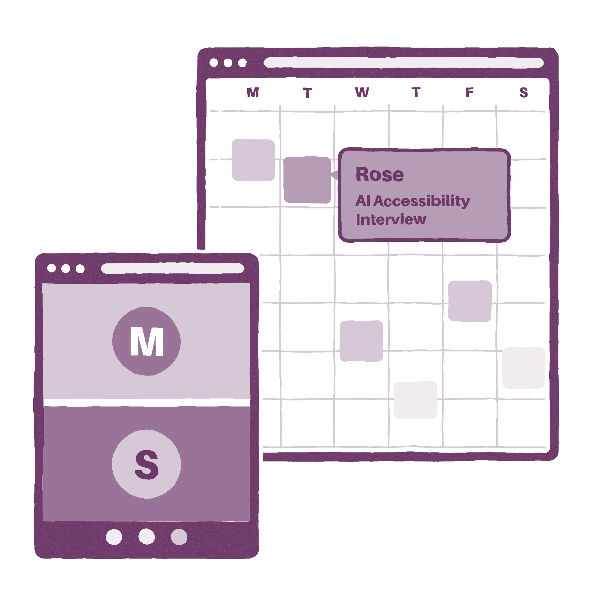
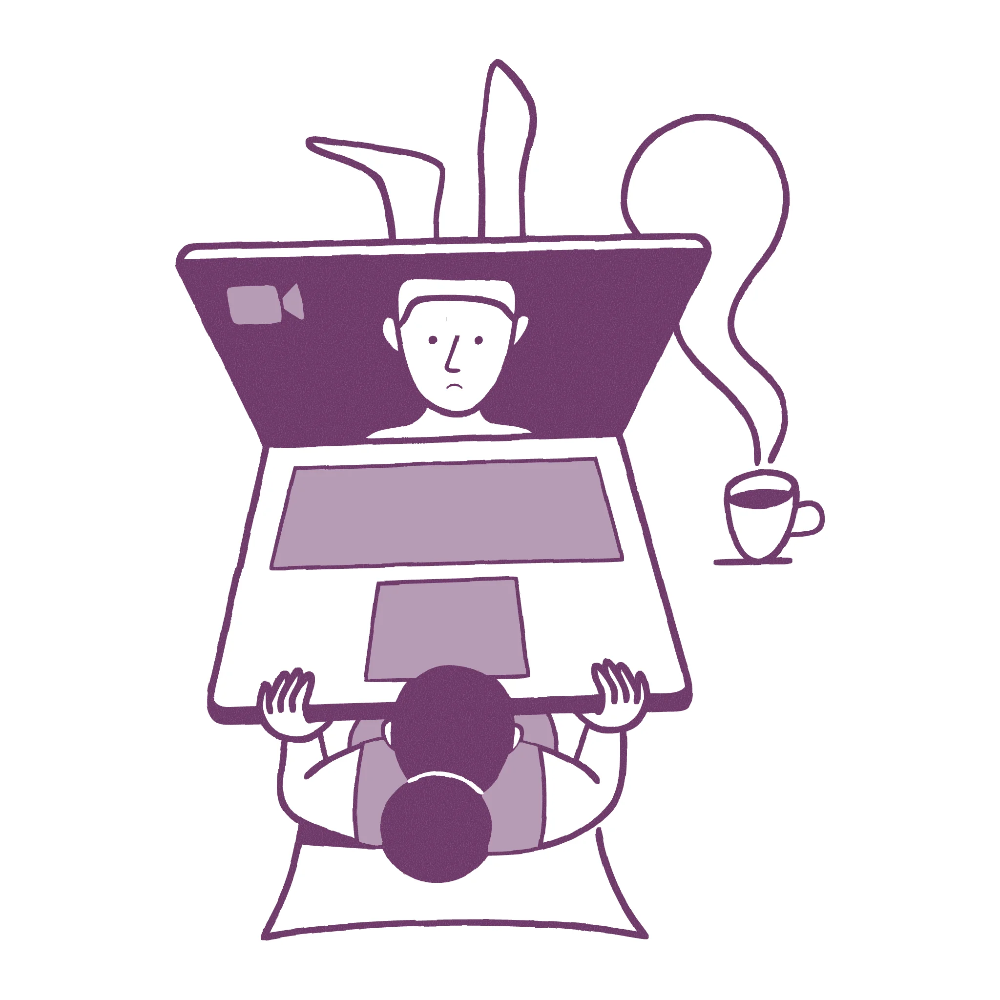
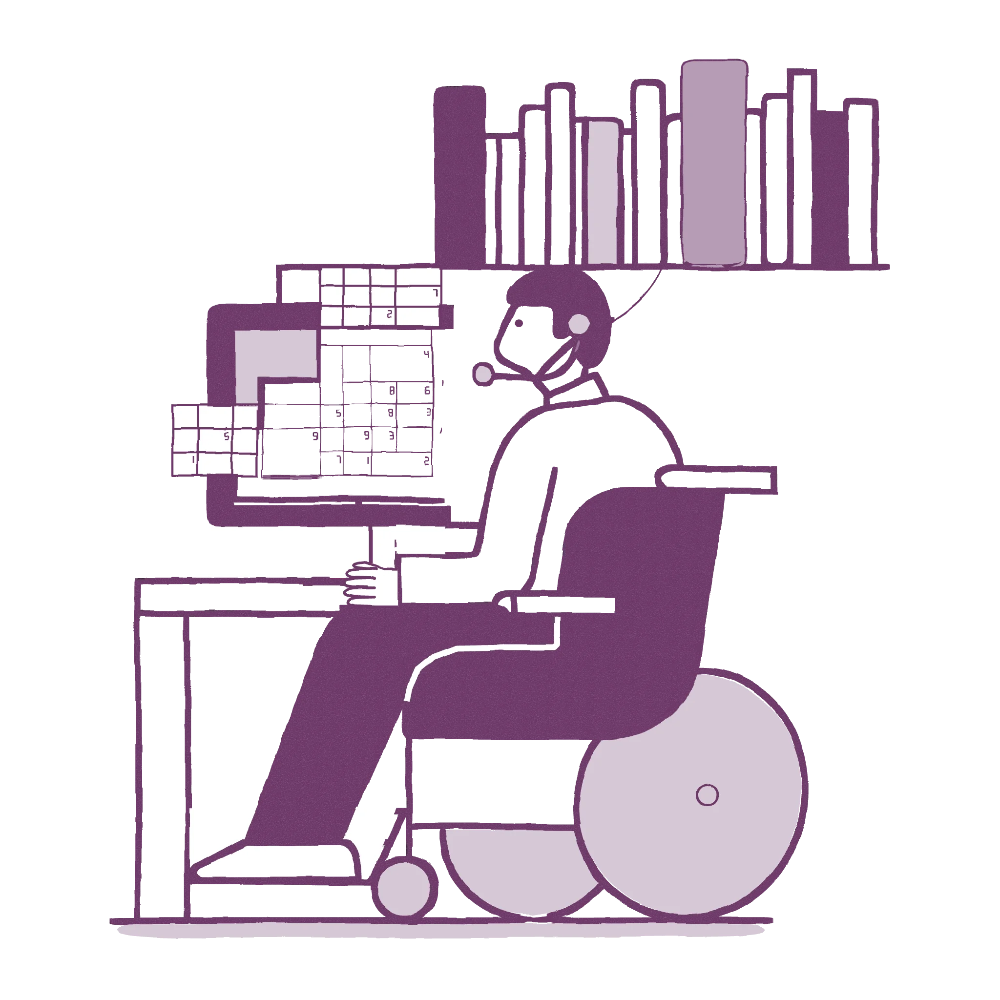
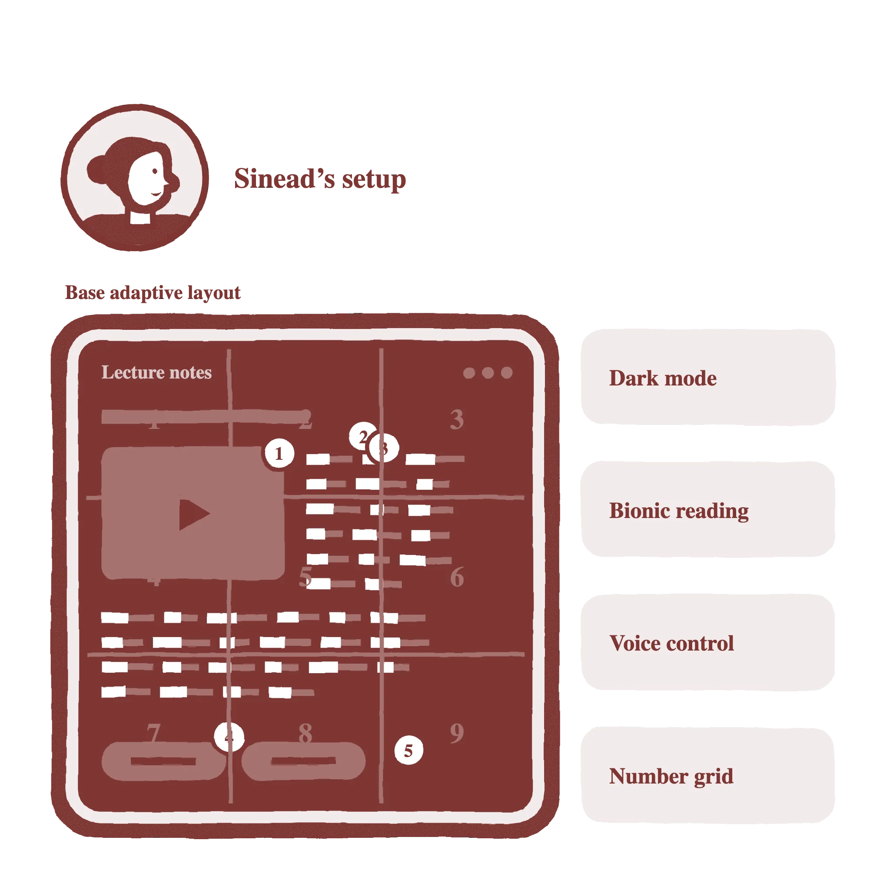

Your UI is
not my UI
AI & accessibility today
Chatbots and agents are a revolution for accessibility
User
research
Interviews
We interviewed six people with disabilities about their setups and their AI use.

Melody
Uses AI as an assistant, not a replacement.
“I do use AI, but only as an assistant for what I'm looking for. Not to do the searching from scratch.”
Matthew
Uses AI as training wheels, not autopilot.
“[…] you have to put your name to things. If it went ahead, did a bunch of tasks, emailed people, and I couldn't really take it back — that feels … uncomfortable, giving it that much autonomy.”
Sinead
With context about you, AI can help you in ways you didn't anticipate.
“I was really struggling one day … but then, interestingly, it came up with a really insightful reason: it was the drop in barometric pressure. The change had been so fast. And it said that's really common with people with brain injuries.”
No revolution
- Chatbots & agents: helpful tools
- The simple interface is very accessible
- Trust & reliability are the problem
- We want assistants, not replacements
Allana
AI should remove the disability tax on everyday tasks.
“Part of the enjoyable thing in life is struggling through things. Having everything taken care of for you takes away a bit of the fun.”

Rose
Everyone's settings are different and incompatible.
“I live in a disabled house […] all our settings are different, even across our iPads. It's actually an in-house joke: I can't look at my husband's iPad, he can't look at mine, and the kids hate using either.”
Myron
An interface where you're already a power user
“If I had an AI box, I could tell it to line up all my headers from cell A1 to A20 and just send it. That would save so much time. That would be a life changer for me.”

The limits of
adaptability
Today's model
One interface for the average, with tools and settings on top
…and they start to conflict [let's make this present already in the beginning]

One interface can't fit everyone
- Setups are very personal
- Adaptations conflict with each other
- Configuration costs energy
- Standards have limits
A new concept
Personalization over adaptability
A UI generated for your needs.
- your current task
- your preferences
- your accessibility needs
- your circumstances
- your state of mind
- your external environment
Your UI is not my UI
One task, many UIs
![Three stacks side by side, each starting from the same intent, I'd like to translate this text. Rose's: condition, hyperphotosensitivity; environment, on the couch, curtains drawn; situation, a medium energy budget today; and below it an iPad with a dark, dim translator. Myron's: a spine injury, steering by head; at his desk, headset on; focused on a spreadsheet; and below it a monitor with a translator that only listens. A third, unnamed person's, drawn fainter: needs reading glasses; in a crowded subway, one hand free; running late, heatwave, stressful; and below it a phone with big buttons in reach of the thumb. Past it, another empty stack runs off the edge.](media/personas/demo-two-people.webp)
Empathy is
our point
Intent What you're trying to do
Empathy Who you are right now
The industry is already doing this
[here screenshots of those examples might fit]
- Google Search AI Mode generates a custom layout for every query
- Artifacts — AI tools generating working interfaces on demand
UIs with empathy
- Remove the adaptation burden from the user
- Don't rely on apps built with accessibility in mind
- Remove compatibility friction between adaptations
Launching
is creating
Apps can't predict you
“No developer can predict all the ways a user will want to manipulate information.”
David Karger
Not just how you use them, but who you are.
The economics changed
Google Research: LLMs already turned a finite library of texts into an infinite one — generated on the spot for any need.
What if launching an app means creating an app?
We started with disability.
But everyone benefits from bespoke software.
Imagine everything is bespoke
- Privacy
- Stability
- Isolating
Closing
Key takeaways
-
[can we shorten the bullet points a few words?]
- One interface can't fit everyone and the burden lands on the user
- A generated UI should serve both the task and the human
- With AI, bespoke interfaces become viable for the first time
Back to Sinead
No fighting plugins. No setup that collapses when she opens a lecture.
Just an interface that already fits her.
[we could add a positive illustration referencing the earlier slide]Thank you!
Q&A
Backup — Q&A
Anticipated objections
“Doesn't this just hand more power to whoever owns the AI?”
A generated UI can be empathetic to you — or to whoever owns it.
“If everyone's UI is different, don't we lose common ground?”
Real cost. Keep the periphery visible — personal shouldn't mean sealed.
“Will people actually use this, or just accept the default?”
The empathy framing sidesteps it — the default already fits.
“An interface that knows me that well — what about my privacy?”
A real risk. Local models may keep that context on your own device.
“But a UI that keeps changing breaks screen readers.”
Right: stability is a basic trait of accessibility and of good design in general. Our answer is memory, and least surprise is actually empathy applied. So hopefully this corrects itself with empathetic interfaces.
“Does this actually work today?”
Not quite. Models can generate working interfaces; the plumbing around them still fails.